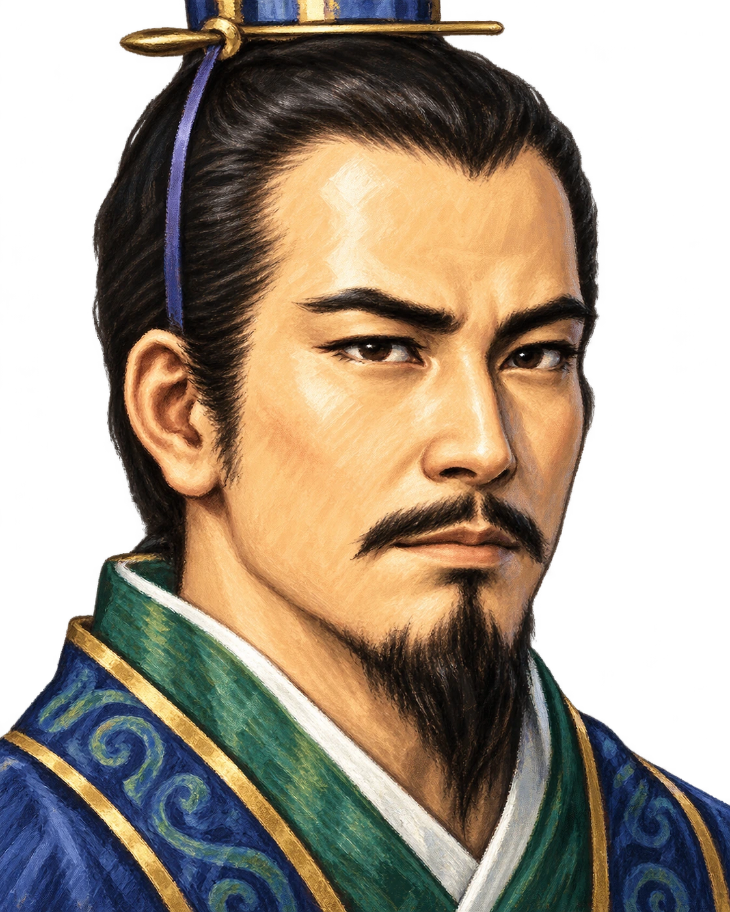
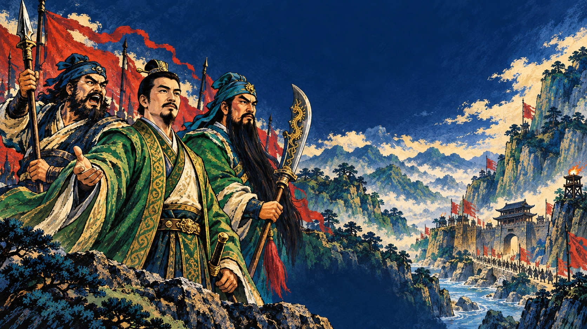
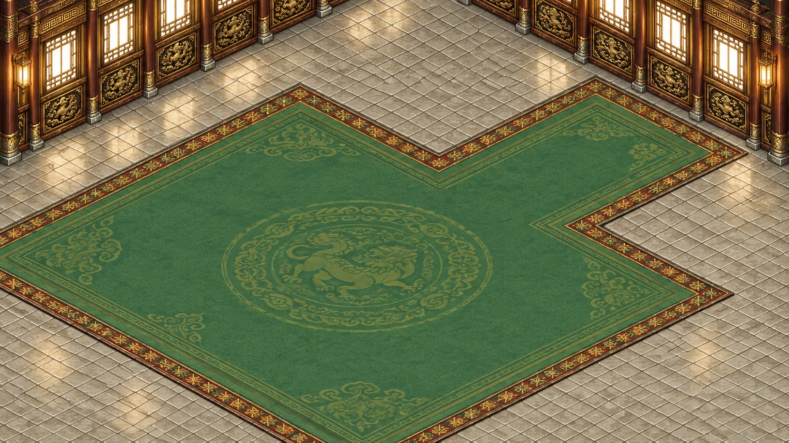
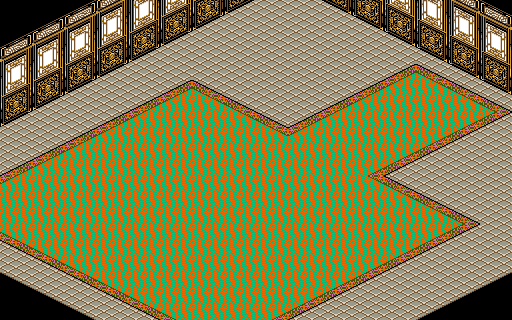
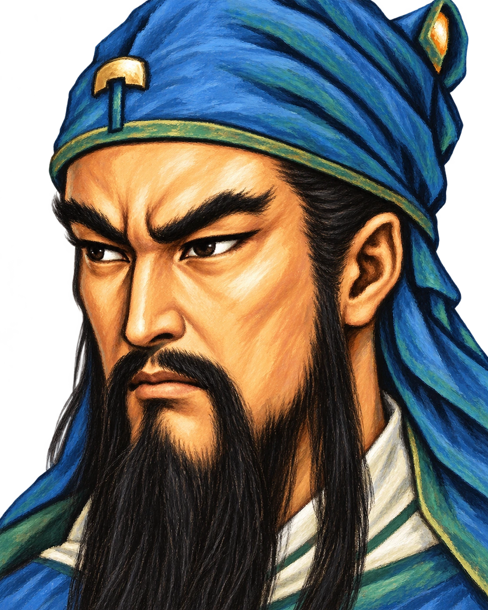
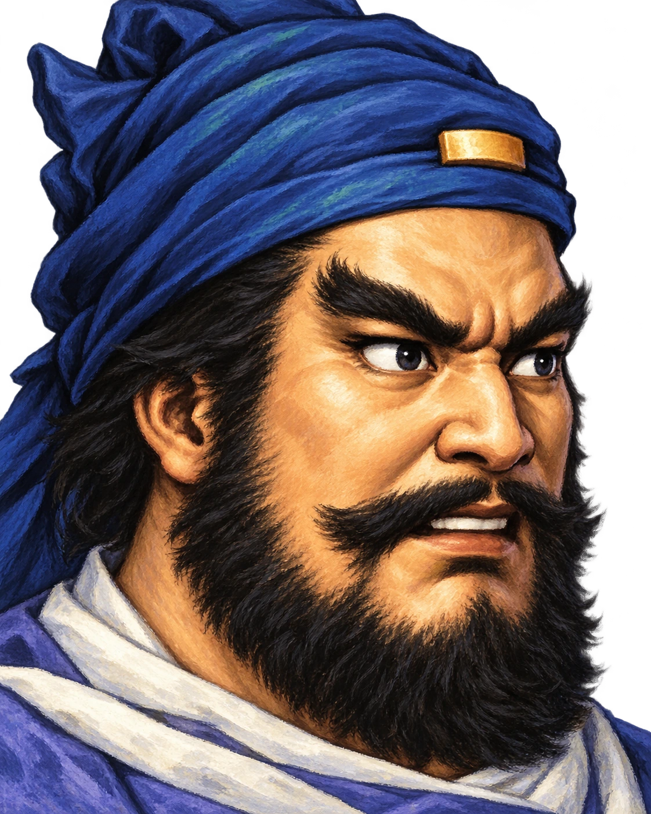
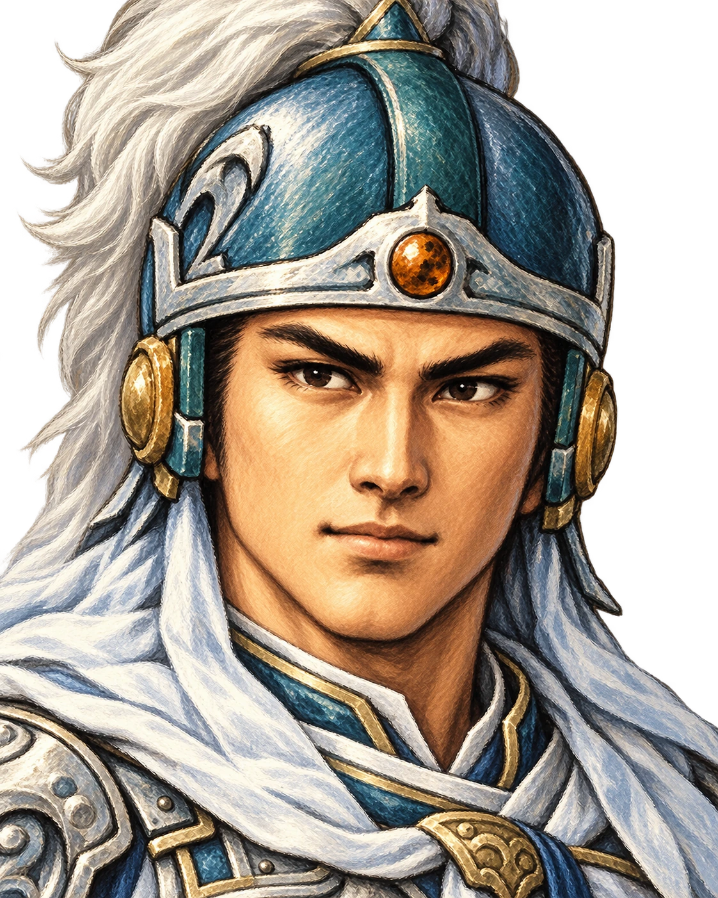

刘备 · 仁德
身边友军获得增益；每次实际过关额外获得 50 经验。

实际游戏画面
重制对照


武将与兵种

身边友军获得增益；每次实际过关额外获得 50 经验。

本回合移动越远，出手越重，把赤兔马的突袭做进战棋。

更容易打出会心一击，正面破阵就是他的本事。

离队友越远，孤军深入时越能发挥战力。
军乐队周围八格友军获得强击光环，行动后光环清楚可见。
运输队为友军恢复兵力即可获得经验，不再是永远升不了级的后勤。
当前可玩内容
抢先体验版已完成十二张战场，包含广川／信都、巨鹿／清河两组路线分支。连续通关会继承人物、等级、装备、金钱、道具与选择。
后续将沿原作战役继续制作；先把每一关打磨到能放心交给玩家。
视频与开发故事
最开始只是想试试新模型能不能逆向做出一关。结果第一关有模有样，我就开始一张地图一张地图修路、画人物、补动画、重新配音乐。现在它已经从一次实验，变成了我小时候想做游戏的那场梦。
完整开发录播和 B 站视频正在整理，上线后会在这里直接更新。
开发近况
保持 16:9 完整画面，不再强制全屏，也不会裁掉字幕。
排行榜与账号、云存档同源运行，通关成绩能够正常进入天下战报。
首次打开不再下载整包；进入哪一关，才请求哪一关的地图与动作素材。
玩家留言
开始之前
同一浏览器有本地存档；注册游戏账号后可同步到阿里云，也能随时导出存档文件自行备份。
可以。手机与平板进入战斗后建议横屏，介绍页本身可以正常竖屏浏览。
目前免费，不用安装。打开网页就能玩，首次进入只加载开始所需内容。
不用。网页更新后直接进入新版本，账号云档和本地存档继续保留。
桃园故人已在阵前。
现在开始试玩
这里会显示审核通过的玩家留言。问题进入修复后，状态会从“已收到”更新为“修复中”或“已修复”。